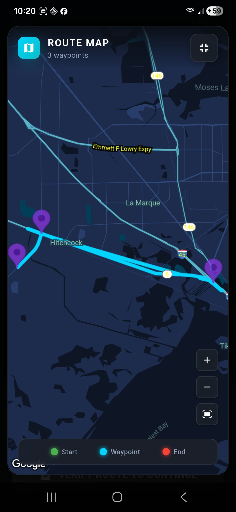
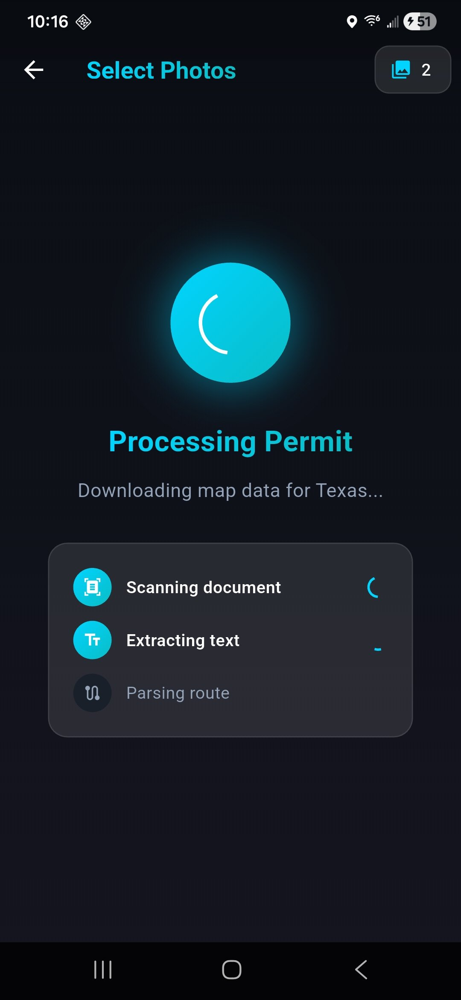
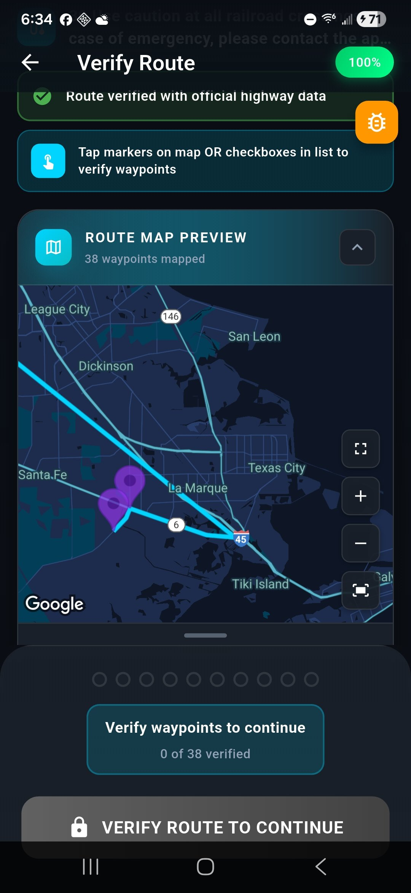
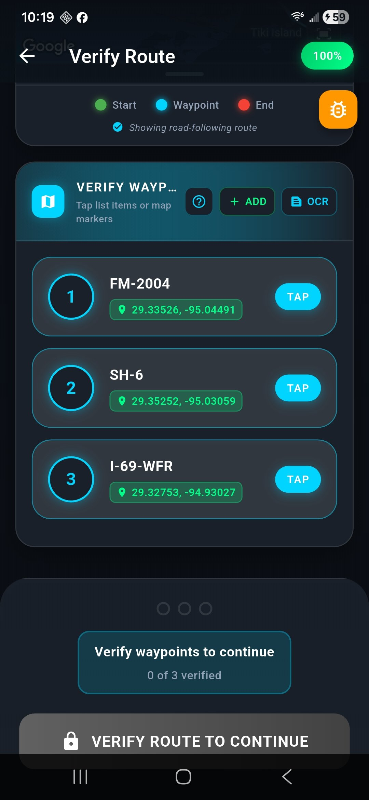

Android alpha testing
Permit-approved routing for oversize and overweight trips.
Scan permit pages, verify the route against the permit, store an audit record, and resume navigation on the approved path.

Latest APK
Download the current Android build
This link is populated from the public release manifest generated by the GitHub release workflow.
Latest APK
Looking up the latest release...
Screenshots
Route review before navigation
The alpha flow is centered on permit capture, OCR processing, route verification, and waypoint-by-waypoint review.



App use
Basic workflow
- Add permit pages. Capture photos or select permit images from the device.
- Review OCR results. Confirm the extracted origin, destination, route segments, and restrictions.
- Verify the route. Compare the displayed path with the permit and tap each waypoint after review.
- Accept the route. Store the accepted route and audit record before starting the trip.
- Resume navigation. Reopen the verified trip and follow the permit-approved route.
Android sideloading
Install the APK
- Download the APK. Use the download button on this page from the Android device.
- Open the downloaded file. Android may ask which app should install the package.
- Allow installs from this source. If prompted, enable the permission for the browser or file manager you used.
- Finish installation. Return to the installer and tap Install.
- Open Permit Route Pro. Sign in, verify email if prompted, and start with a test permit.
Alpha builds are distributed outside the Play Store. Only install APKs from this page or the linked public GitHub release repository.